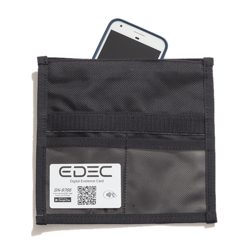

Police were previously allowed to conduct warrantless searchs for a few reasons:
Safety: finding hidden weapons that can be used to harm the officer
Cell phones are generally not dangerous
Preserve Evidence: prevent the arrestee from hiding or destroying
valuable evidence
"Faraday bags" can be used to block outside transmissions from
reaching the cell phone
By blocking the phone from outside communication, the data on it can not be
erased remotely

Searching a cell phone is much different from searching pockets or simple belongings
The revolutionary digital age has drastically changed what able are
able to carry around nowadays
A cell phone search is comparable to searching through a person's house
Modern technology allows us to store all this in our pockets
Just because all this can be stored in our pockets, it is of no less importance
Warrants can be quickly obtained to search the devices
The same technological innovations that now require officers to obtain warrants have
also made it faster and easier to acquire them
Judges are available to sign search warrants "within 15 minutes"
Court has carved out a possible exception to the warrant requirement
Situations presenting sufficient evidence of "exigent circumstances" — for
example, if a bomb is about to be set off, the warrant requirement may be waived
But?
Person A is carrying some illegal document in their wallet
As per the ruling, Person A is subject to search of their wallet and
consequently the discovery of the document
Person B is carrying the same document digitally, on their cell phone
However, Person B is free from the warrantless search of their cell phone?